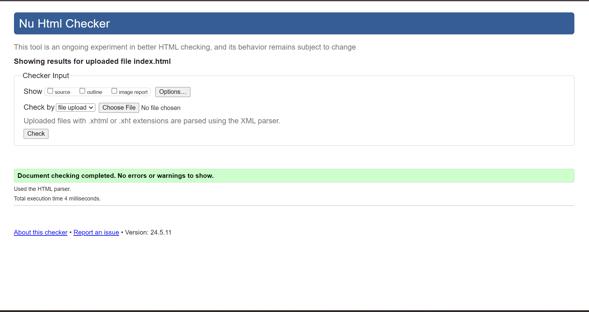
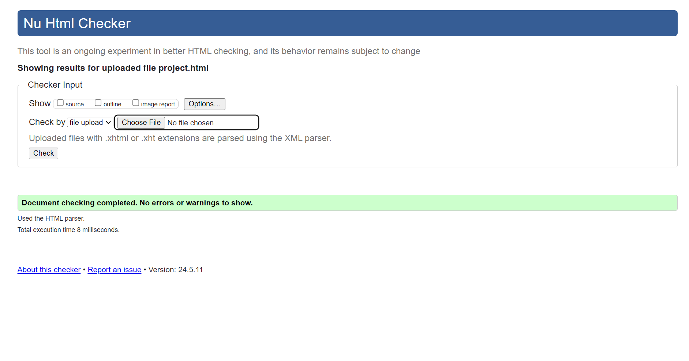
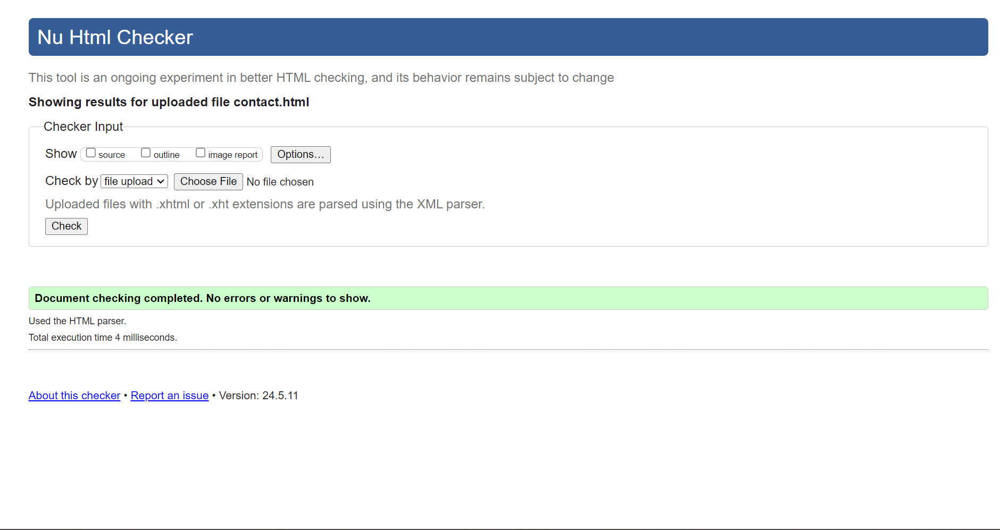
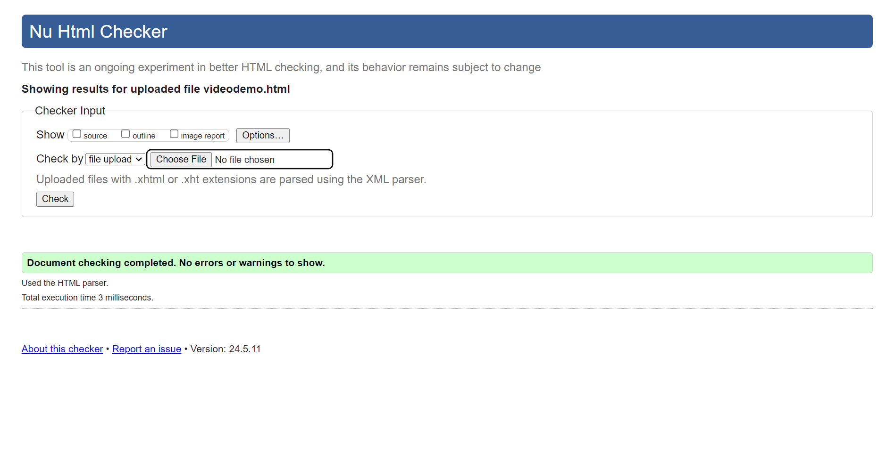
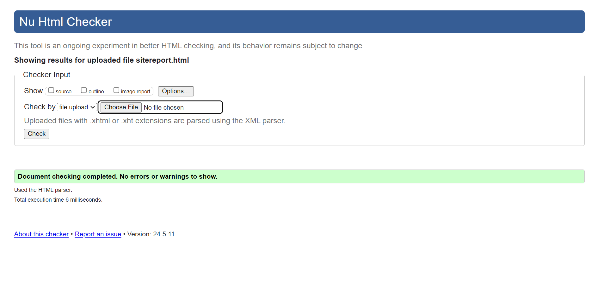
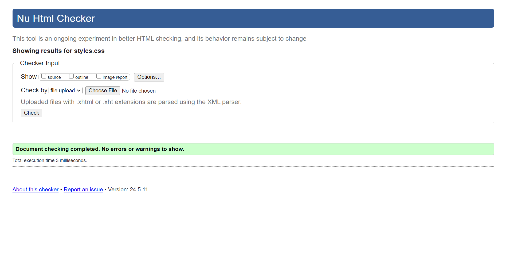

Development Experience
I started with HTML and CSS, the building blocks of web development. Learning to structure a webpage with HTML was straightforward but designing it with CSS brought its own set of challenges. Understanding the box model, positioning elements and creating a responsive layout required patience and practice. Debugging issues, such as alignment problems and respondive design challenges, taught me the value of the browser's developer tools.
Reflective Discussion
This module was transformative. I gained confidence as I progressed, celebrated success, and learned from challenges. I developed a deeper understanding of HTML and CSS, particularly in creating responsive designs and ensuring code quality through validation. The experience improved my problem-solving skills and deepened my understanding of web development.
Design Decisions
I chose Arial for readability and used a color scheme from Coolors for visual appeal. Websites like Dribbble influenced my design choices. My design aimed to balance aesthetics with functionality influenced by modern trends. One of the main challenges was ensuring the site was responsive. Likewise, implementing a hamburger menu for mobile devices and using media queries to adjust the layout for different screen sizes required several iterations and testing.
Validation Screenshots
Below are screenshots showing my HTML and CSS code validation:
     